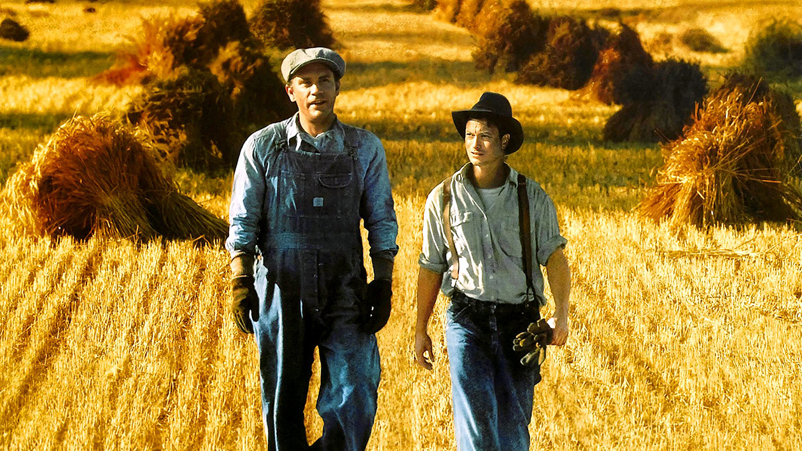
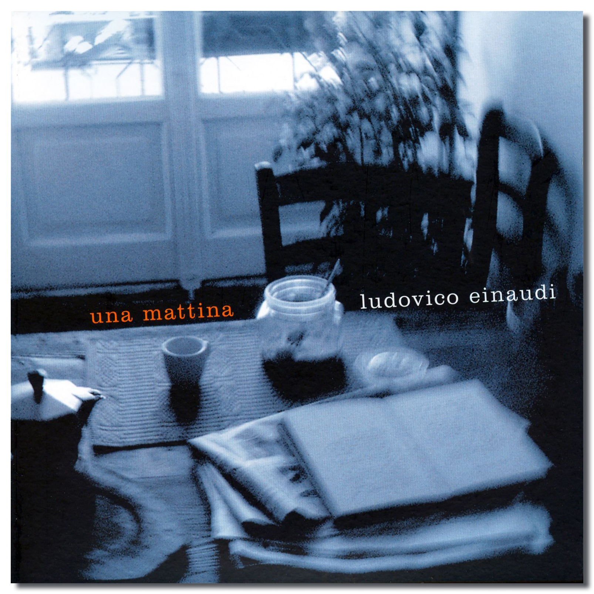

Film
The Matrix
Lana Wachowski and Lilly Wachowski, 1999
Neo, a computer programmer and hacker, has always questioned the reality of the world around him.

John Steinbeck, 1937
George, small and wiry, is the caretaker of the mentally challenged Lennie, who possesses immense physical strength but struggles to understand the complexities of the world.
Lana Wachowski and Lilly Wachowski, 1999
Neo, a computer programmer and hacker, has always questioned the reality of the world around him.
Ludovico Einaudi, 2004
A wonderful piece of music.
Blizzard Entertainment, 2004
World of Warcraft is a massively multiplayer online role-playing game released in 2004 by Blizzard Entertainment.
Set in the Warcraft fantasy universe, World of Warcraft takes place within the world of Azeroth, approximately four years after the events
of the previous game in the series, Warcraft III: The Frozen Throne.